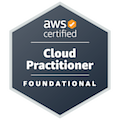

About Me
Professionally, I have been a Network Administrator, an IPv6 evangelist and expert. Currently, I am an IT Infrastructure Director. I have worked for different companies such as major local Universities and Financial institutions. I am also the proud father of two awesome boys, married to a wonderful supportive wife, and an avid reader of literature and humanities.
My professional life started with a University degree in Systems Engineering, and a pretty humble job as an MS Office instructor. After becoming Cisco Certified in 2008, I was given the first real chance to prove my worth. Ever since then, I have strived to be a better version of myself, day in, day out.
Almost 2 years ago, I stumbled across Cloud Computing and DevOps, which sparked my interest, so I decided to start learning new (for me, at least) Cloud / DevOps technologies. Now, I am walking the path to drive my career into Cloud Computing / DevOps territory.
Cloud Computing and DevOps have renewed my thirst for self-learning, partially for the mere pleasure of learning, as well as for the professional possibilities that can potentially open up for me. This website is a materialization of the technical prowess that I am seeking to build. I have set a personal goal for myself: to become a Cloud / DevOps engineer, to start my career anew, to enjoy the very moment when I can say I understand a given topic or technology, and also to find a better job during the process.
Personally, I enjoy spending my time with my family, listening to different music styles, and reading as many books as possible.
Professional Profile
- I am skilled in customer service, management, strategic planning, budget planning and execution, as well as in project management.
- I have strong problem-solving skills and an extensive record of leading customer-centered technical support teams, with special emphasis on IT Infrastructure and Networking.
- I am an experienced IT Infrastructure, Network (routing / switching / Wireless) and Firewall Manager, with a 14-year history working with and managing technical support teams in High Education and Financial institutions, in On-premise environments as well as in public Cloud Computing platforms.
- I also have more than 10 years of experience as a University associate teacher in technical subjects, such as Information Security, IP Networking and IT Strategic Planning.
Technical Skills
Work Experience
IT Infrastructure Director
Fundación delamujerSep. 2017 - present
- Lead the enterprise IT Infrastructure team, responsible for the company’s nation-wide operation, regarding the on-premise datacenter as well as some services on AWS, backup cloud datacenter (CloudEndure), Networking and Firewalls.
- Lead the design and implementation of IT projects, which support and materialize the company’s strategic planning.
- Plan and execute the company’s annual IT budget.
- Manage the commercial relationships with suppliers and third-parties of all aspects and needs of corporate IT.
- Build and provide detailed root-cause analysis to IT Senior Management when service disruption occurs, using standard metrics and industry’s best practices as frames of reference.
Network Administrator
Universidad Industrial de SantanderJune 2014 - Aug. 2017
- Lead and be part of the end-user technical support team, covering all aspects of IP networking (Switching, Routing, Wireless, Perimeter Security Firewalls).
- Monitor the institution’s IP network and related services to guarantee the end-user’s Service Level Agreements.
- Lead the team in charge of the design, execution and supervision of the IT investment projects (about $4 USD million) for the re-build from the ground-up of the IP networking services across all the institution’s branches (fiber optics, L2-L3-L4 devices, and Firewalls).
IPv6 Networking Consultant
Conex-SI Ltda.Feb. 2012 - June 2014
- Pre-sales IPv6 engineer.
- Design and execute the projects of IPv6 adoption across government institutions, with special emphasis on public universities.
- Evangelize about the adoption of the IPv6 technology on several private institutions, with special emphasis on Telecommunications companies.
Connectivity Coordinator
Universidad Pontificia Bolivariana, MedellínMarch 2008 - December 2011
- IP network manager, including switching, routing, wireless, Firewall, Domain Controller, DNS and DHCP servers.
- Member of the team in charge of the design and execution of the IP network investment projects across all the institution’s branches.
- Lead and be part of the end-user technical support team, covering all aspects of IP networking.
Teaching Experience
Associate Teacher
Universidad Pontificia Bolivariana, BucaramangaDifferent dates (See below).
- IT Strategic Planning / IT Management Specialization (Postgraduate). March 2020
- IP Networks / Information Security Specialization (Postgraduate) / November 2019.
- IP Networks / Information Security Specialization (Postgraduate) / June 2007.
Associate Teacher
Universidad Pontificia Bolivariana, MedellínDifferent dates (See below).
- Hands-on laboratory on Wireless Networks Security / Information Security Specialization (Postgraduate). November 2011.
- Information Security Techniques / Informatics Engineering (Undergraduate). June 2011.
- Information Security Management / Informatics Engineering (Undergraduate) / June 2012.
Education
Information Security Specialist
Universidad Pontificia Bolivariana, Bucaramanga2008
Information Security Diploma
Universidad Pontificia Bolivariana, Bucaramanga2005
Systems Engineer
Universidad Industrial de Santander2004
Certifications
DevOps Essentials Professional Certificate - DEPC®
Issued April, 2022
view credential
AWS Certified Cloud Practitioner

Issued July, 2021
view credential
Lifelong Learning
Issued August, 2022
view credential